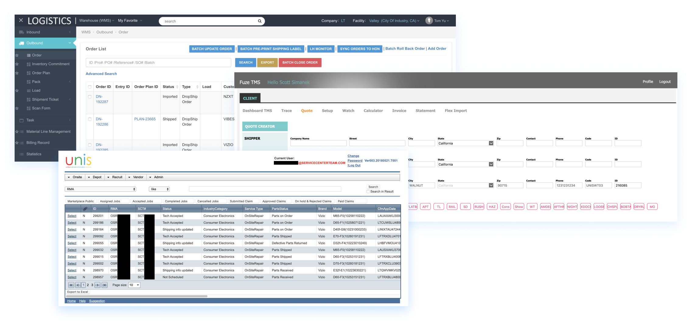
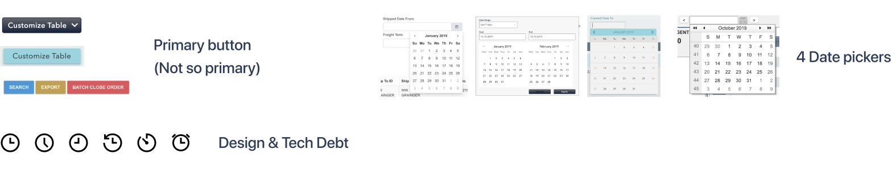
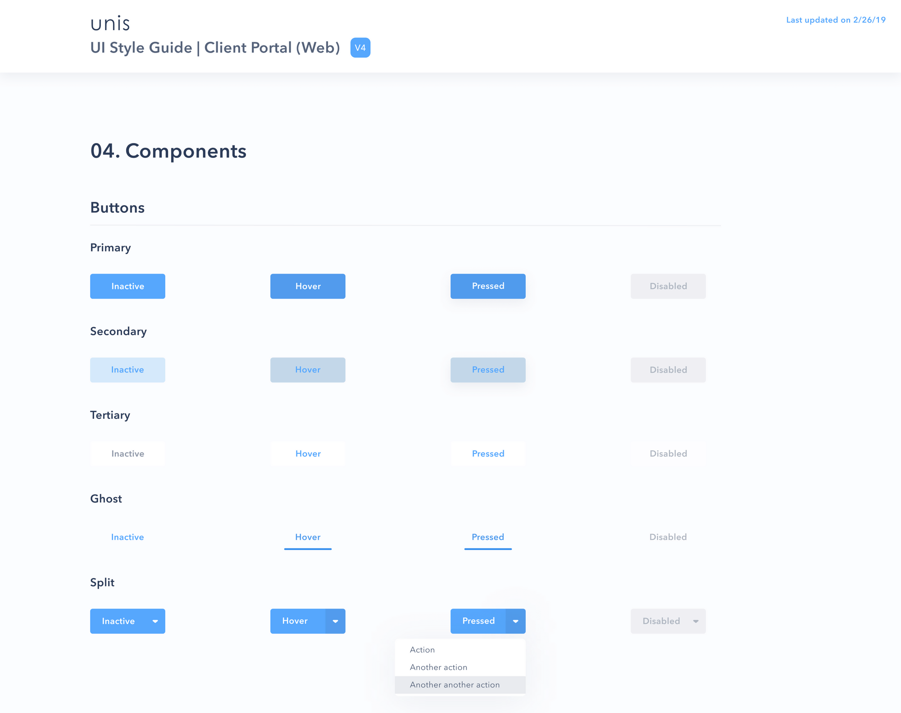
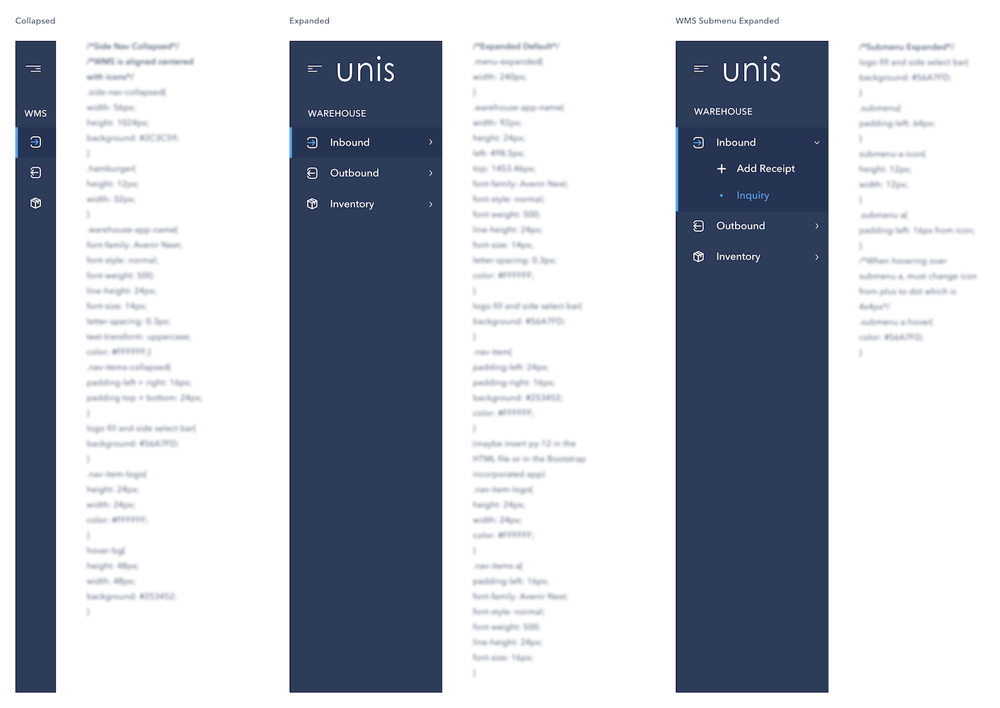
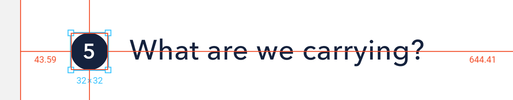
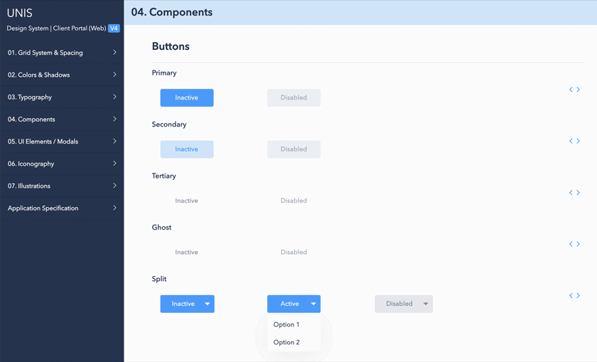

UNIS Design System
Web & Mobile
Project Details
Type: Design System
Company: UNIS
Platform: Web, Mobile
Duration: Jan - Mar 2019
Team: 2 UX/UI Designers, 1 Front-End Dev, 1 Full-Stack Dev, 1 Project Manager
Tools: Figma, Jira, Trello
Type: Design System
Company: UNIS
Platform: Web, Mobile
Duration: Jan - Mar 2019
Team: 2 UX/UI Designers, 1 Front-End Dev, 1 Full-Stack Dev, 1 Project Manager
Tools: Figma, Jira, Trello
As a logistics and fulfillment company, the flow of UNIS depends on the life cycle of system managements: Transportation Management System (TMS), Warehouse Management System (WMS), Field System Management (FSM), and Recycling Management System (RMS).
Each system points to different web portals with no design consistency, making it less intuitive for cross-platform users and trapping the engineering team in an endless web. Thus, a design system was proposed.
Origin Story
When I first joined UNIS, I was alarmed by the lack of consistency between management systems which were all designed and developed by in-house. Components in each system were different sizes throughout different pages, unevenly positioned, and colors were off by high or a small but discernible values (e.g. #FFFFFF vs #FFF8F8), and those are just the minor of many examples. From a developer's perspective, you can imagine the code pouring div soup, #ids, and styles not associated with any page elements. From the designer's perspective, you can see and feel the lack of balance, consistency, and perceptibility when navigating through the systems.

Snippet of our internal management systems
How can we unify the experience of our systems to our users?
Origin Story
From the accumulation of years without non-reusable components and design conventions put in place, "design debt," we decided it was time to bridge the design and dev team to save ourselves from repetitive work. As a college graduate of the American education system, no debt is good.
To get to the root of the problem and the reason to redesign in the first place, our team spent time auditing each system’s components and visual assets and it wasn’t pretty. It felt exactly like cleaning out your garage. In our garage, we found multiple variations of the same button, variations of the same component, and the icon library was just a mess. We’d even find so many shades of the same colors off by a few pixels. For example, we figured developers wouldn’t know which clock icon to use and a designer or developer would just be like “I’ll just make a new one!” We were unknowingly recreating existing elements, components, and colors across our UI and adding to the garage.
And when we got feedback from our users in our office and another location about the visual direction, it was brutal. But all what was said was valuable information to refocus on our consumer satisfaction.

We reviewed current UI inventory to note inconsistencies. Documentation would later be part of a deck to present to stakeholders so they can be invested, informed, and support this initiative.
From the accumulation of years without non-reusable components and design conventions put in place, "design debt," we decided it was time to bridge the design and dev team to save ourselves from repetitive work. And as a college graduate of the American education system, no debt is good.
We wanted to craft a new design for our product that would be as delightful and easy to use to properly reflect UNIS. And what I learned that ironically, the main user of a design system is the designer and the developer. We are the direct stakeholders. And our customers are now our indirect stakeholders.
So a design system was absolutely necessary. We needed to entirely rethink the way we designed and built products by decreasing the friction in the designer-developer workflow. Of course there were hurdles during our proposal meetings with management but at this point, we had more pros than cons.
Our team ran sessions of rapid iterations for weeks on what visual direction to go for. We wanted it not boring logistics software, but not frilly and visually distracting. I can say these weeks were exhausting because it’s a tool that’s long term investment for your company, coworkers, and consumers but they were the most memorable. So we organized a master Figma file of visual guidelines, assets, every building block that makes up our UI.

Preview of early design system drafted in Figma.
Most things, not all, can be developed. It's a nightmare to try and develop anything that goes beyond limitations. Communication was crucial because building and implementing a design system is bread and butter to large scale interfaces but companies who don't predict that see it as a luxury. Because it's a tedious process that requires all hands on deck, the ROI is worth it in the long run.
To alleviate the component naming system burden, we inputted the CSS classes and specs for documentation and handed it to the dev team for implementation.

Side navigation UI for UNIS Design System (Specs redacted)
After reading about the 8pt grid system, it became our base to laying out a foundation of consistency after trial and error. We reconfigured spacing, padding, and dimensions to be a multiple of 8 across components and pages. Our mockups now had horizontal and vertical rhythm from the naked eye.

Even with “Snap to Grid” on, I was manually correcting pixels to the nearest whole integer. Later on, converting to an 8-Point Grid eliminated this issue.
After designing a Figma library, the final step would be handing it off to developers to publish as a live reference design system so both our dev and design team can reap the benefits. Our dev teams who are housed in multiple locations overseas can now reference classes for reusable components to combat inconsistencies. All they need to do is download the master CSS file and copy the HTML line.

Can't show our entire design system for proprietary reasons, but here's a sneak peak!
Rapid experimentation and beyond
Now, what I hope you don't get from this is the assumption that a design system is the grand solution to faster product sprints or once they're done, it's done. In reality, it continues to be a nonlinear cycle that will eventually lead to healthier hand-offs. There's a lot of thought to this because the factor of the future is weighing on you. Once we finish, what if it's not universally implemented as planned? What if it's later rejected by management? Will developers continue to reference the system accurately? When you're designing several pages and iterations of nearly every asset, it's nearly impossible to not put heart to this and only time will tell.
Until this day, we still go back to manage the dent and holes of the current design system from user testing so it's important to notify the whole team when more changes are published. Though the foundation for creating a design system is the same as a product, the ideation and experimentation for this project are rapid and sporadic. We would do mock-ups of our current management system pages to users around the office for guerilla testing with the new UI components, but sometimes they'd even prefer the old one and it'd be back to the drawing board.
Next time
At the time of this project, there were barely any help articles to refer. I'd look to other designers who were currently building their design systems but just as unsure. The process of building a design system is similar to the UX process but not as grounded. This project was my eye-opener to the age-old question "Should UX/Product Designers know how to code?"
Through failures and misunderstandings with developers during its implementation stages, this was the catalyst for me to mentally put myself through a front-end bootcamp during my spare time. I "understood" mark-up languages but at the time, couldn't understand the framework and selector process so many of our UI components ended up archived. After I learned enough, I learned how to save a lot of time in future projects by alleviating the workload for engineers and as a UX Designer.
Let’s connect —